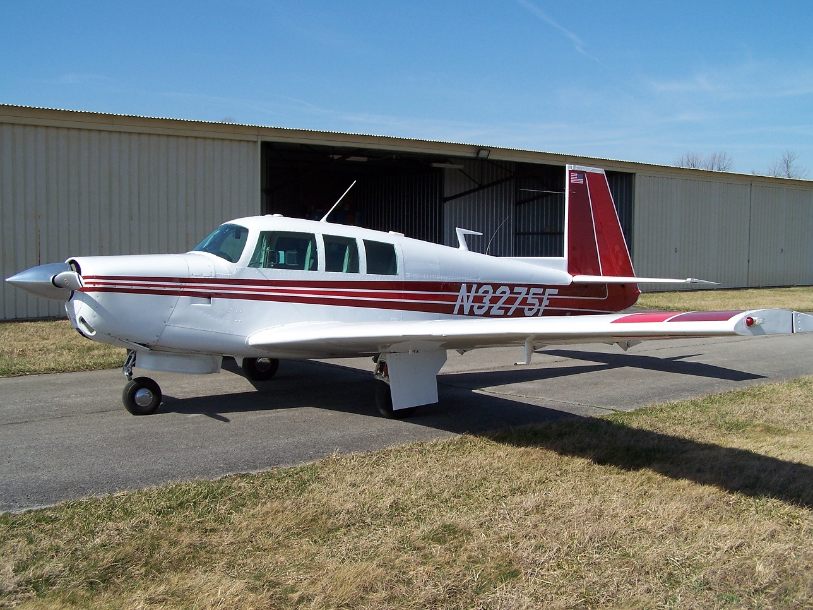

Our Aircraft
Select an aircraft below to see more pictures and get equipment, performance, POH, and weight and balance information.

N3275F - Mooney M20F
$56.50/hr dry - Tach time (~0.9x Hobbs)
156kts cruise at 75% power. 918nm range. IFR certified.
Equipment:
- Garmin 430W (WAAS)
- S-Tec 30 2-Axis Autopilot
- Century Non-Slaved HSI
- PMA 8000B Audio Panel
- ADS-B Out Transponder
- Stratus II ADS-B Receiver
- iPad with Foreflight
- CGR-30P Engine Monitor
- WX900 Storm Scope
Aircraft Use Requirements
- Current medical certificate
- Club checkout required for each aircraft
- Annual flight review with club instructor
- Currency requirements per club rules
- Insurance minimums must be met